會主動找人的提醒系統
MISA 高階主管 AI 實戰營｜第二天 下半場
工具：LINE 官方帳號 × Messaging API
 掃描開啟學員講義cj2vum4.github.io/AIclass/handout.html
掃描開啟學員講義cj2vum4.github.io/AIclass/handout.html本場安排｜180 分鐘
休息另計；AI 執行期間討論應用，完成後立即回到驗收
提醒成果與資料流
先看收到的內容
課前帳號設定確認
任務十一
測試發送
任務十二；每組至少一位
自願綁定
任務十三；其他人自選
提醒規則驗收
任務十四；反向推演通知規則
完整流程回看
一份資料一路到手機與LINE
每組完成一套，每個人看見可能
帳號本人操作
固定電腦與帳號；登入、授權、金鑰由本人處理。
其他人輪替參與
提出需求、觀察 AI、驗收結果；不交換登入。
帶回公司可復刻
保留資料、完整 prompt、本人步驟與成果；交給沒上課的同事。
本場示範：提醒找對人，完成後不再提醒
講師示範使用虛構資料。備援畫面與本次實測要分清楚。
- 先看一則去敏的範例提醒：工作、日期、負責人。
- 同一筆任務完成後，下一次提醒應排除它。
- 每組至少一位實際收到，並把能復刻的範例帶回公司。
講義：每個任務一個完整 prompt
講義網址就是第一頁 QR Code；手機、筆電都能開，不用登入。
- 開啟學員講義（或掃描第一頁 QR Code），找到目前任務。
- 先看「先備好」與「本人操作」。
- 複製 prompt，填好黃色【】後貼給 Claude。
- AI 完成後依驗收條件核對，再接續下一項。
LINE 官方帳號 × Messaging API
台灣人每天打開最多次的 App，就是最好的提醒管道
兩個名詞，一次搞懂
這堂課：建一間門市，再把後門接到你的年度計畫試算表
LINE 官方帳號
你公司在 LINE 上的「門市」。客人或同事加好友後，就能收到你發的訊息。
Messaging API
門市的「後門」。讓程式（Apps Script）自動收訊息、發訊息，不用人手動操作。
Webhook：不是你一直去看信箱，是郵差按你家門鈴
同事的手機
LINE 平台
Apps Script
通訊錄分頁
程式要每隔幾分鐘去「看信箱」有沒有新訊息：慢、浪費，還可能漏掉。
Webhook
有人傳訊息，LINE 立刻把信送到你的網址。
回覆不算則數
下午完成後，整套系統長這樣
| 任務 | 負責 | 期限 | 狀態 |
|---|---|---|---|
| 確認包裝稿 | 林經理 | 剩 3 天 | 未開始 |
| 官網改版 | 陳經理 | 剩 2 天 | 進行中 |
| 通路上架 | 陳經理 | 已逾期 | 未開始 |
| 招募計畫 | 王經理 | 剩 20 天 | 未開始 |
| 年度預算 | 陳經理 | 剩 1 天 | 已完成 |
LINE 平台
用你的官方帳號發出
1. 官網改版（剩 2 天）
2. 通路上架（已逾期）
確認包裝稿（剩 3 天）
開工前，每次都看這三件事
每一場開始操作前都看一次；任何一項不對，先停下來處理。
- 帳號：右上角頭像是課程帳號；分頁是本組的試算表或 Apps Script，檔名對得上
- 模型：側邊欄輸入框下方是 Sonnet 5.5、Effort Medium；開新對話要再看一次
- 額度：claude.ai「設定 → 使用量」看「目前工作階段」與「本週」；剩不多先告訴助教
這一場的三個角色，各負責什麼？
可以由同一人兼任；至少一位接收者，其他人自由選擇。帳號應已於課前備妥。
| 角色 | 工作 |
|---|---|
| 官方帳號管理者 | 確認本組帳號與Messaging API設定 |
| 程式擁有人 | 本人保管金鑰、設定專案與執行 |
| 自願接收者 | 加好友、親自綁定、確認收到訊息 |
確認本組 LINE 官方帳號
- 開啟本組官方帳號
- 確認 Messaging API 與對應 Channel
- 本人補齊課前缺漏
任務十一｜照這 5 步做
灰字是做完應看到的畫面；對不上就先停，看「卡關怎麼辦」。完整 prompt 在講義。
- 本人帳號本人開啟 LINE Official Account Manager（manager.line.biz）並登入應看到：帳號清單有本組課前建立的官方帳號
- 本人點進本組官方帳號 → 右上「設定」→ 左側「Messaging API」應看到：狀態顯示「使用中」
- 本人開啟 LINE Developers（developers.line.biz）→「Console」→ 本組 Provider應看到：看到對應的 Messaging API Channel
- 在側邊欄貼上任務十一 prompt，按 Enter從講義複製 prompt應看到：Claude 只說明位置、判斷標準與補齊順序，不登入、不建立帳號
- 本人依 Claude 列出的缺項，由本人補齊；任何金鑰都不貼進對話應看到：官方帳號可管理、Messaging API 已啟用、Channel 可查看
AI 工作時，延伸想一想
本人確認事項優先處理；AI 完成就回到成果，不為討論延後進度
應用討論
通知應用中，誰需要採取行動？
完成後核對
每組課前建立的官方帳號可管理，Messaging API已啟用
哪些事不該交給 AI 代理？
Claude in Chrome 碰到這些動作也會停下來問你；OpenAI 的文件同樣建議「不要透過瀏覽器任務傳送機密」
可以這樣做
- 讓 AI 帶路：告訴你下一步點哪裡
- 讓 AI 整理：看懂設定頁、解釋每個選項
- 讓 AI 檢查：設定完成後幫你確認有沒有漏
不要這樣做
- 讓 AI 輸入你的帳號密碼
- 讓 AI 替你按「同意條款」
- 把金鑰（token）貼給 AI 或貼在對話裡
- 讓 AI 幫你付款、轉帳
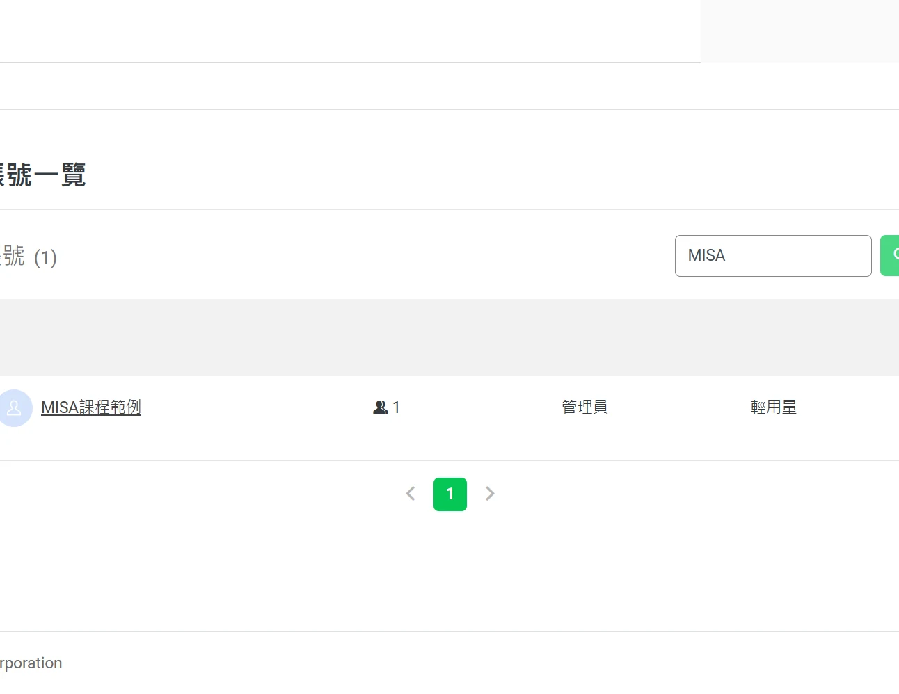
本人登入 LINE Official Account Manager：帳號清單找到本組的官方帳號（可用上方搜尋）
本人帳號本人開啟 LINE Official Account Manager（manager.line.biz）並登入
應看到：帳號清單有本組課前建立的官方帳號
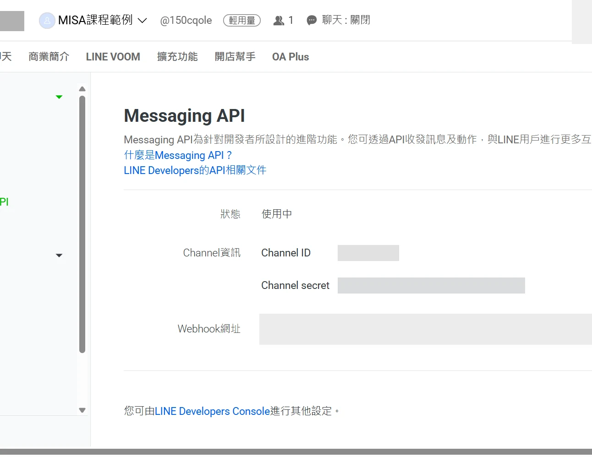
點進本組帳號 → 右上「設定」→ 左側「Messaging API」：狀態顯示「使用中」（Channel secret 已模糊）
本人點進本組官方帳號 → 右上「設定」→ 左側「Messaging API」
應看到：狀態顯示「使用中」
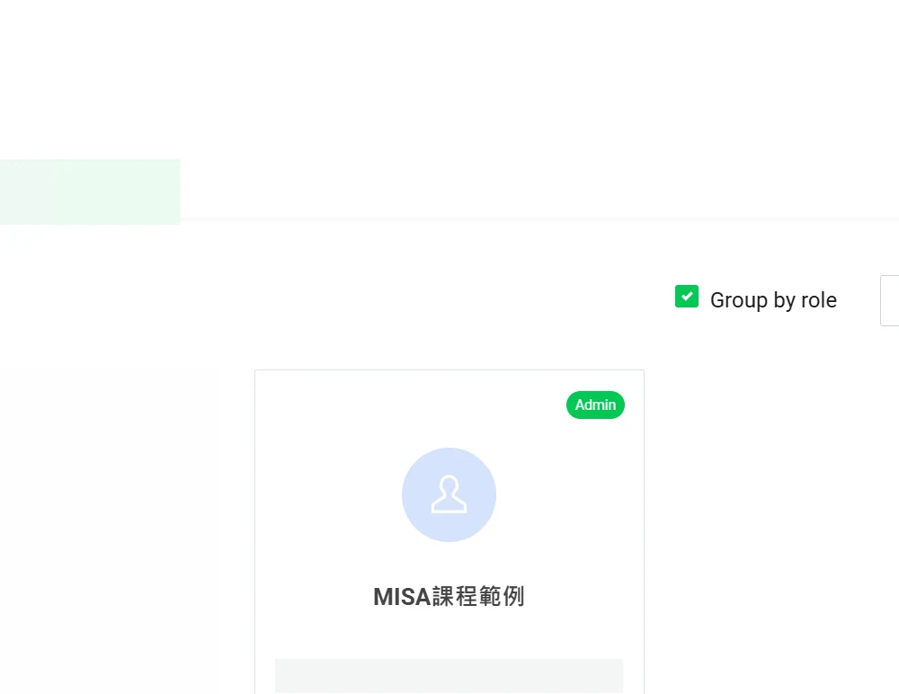
LINE Developers → Console → 本組 Provider：看到對應的 Messaging API Channel（其他 Provider 已模糊）
本人開啟 LINE Developers（developers.line.biz）→「Console」→ 本組 Provider
應看到：看到對應的 Messaging API Channel
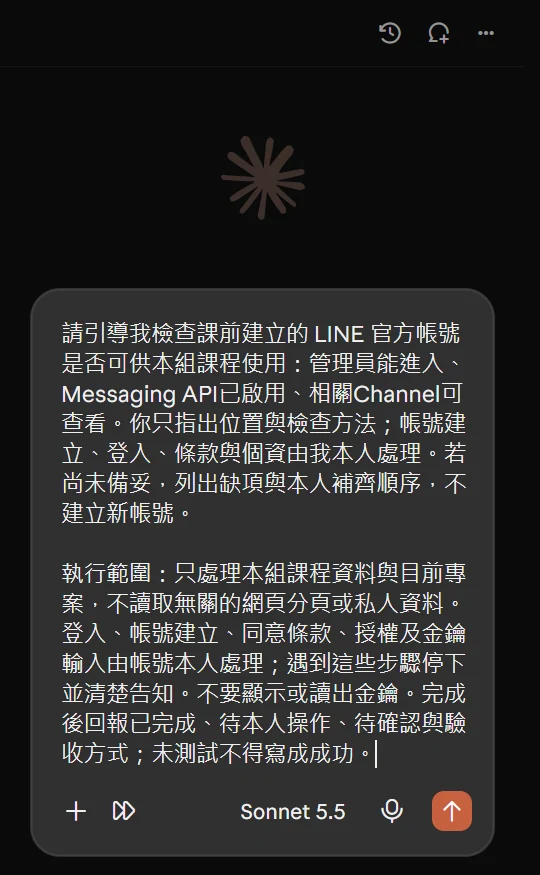
在側邊欄貼上任務十一 prompt，按 Enter（Claude 只說明，不登入）
在側邊欄貼上任務十一 prompt，按 Enter從講義複製 prompt
應看到：Claude 只說明位置、判斷標準與補齊順序，不登入、不建立帳號
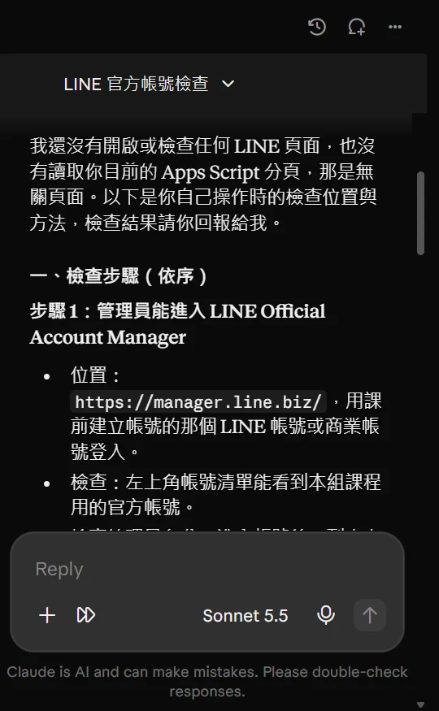
約 1 分鐘：Claude 只說明檢查位置、通過條件與補齊順序，不登入、不建立帳號
在側邊欄貼上任務十一 prompt，按 Enter從講義複製 prompt
應看到：Claude 只說明位置、判斷標準與補齊順序，不登入、不建立帳號
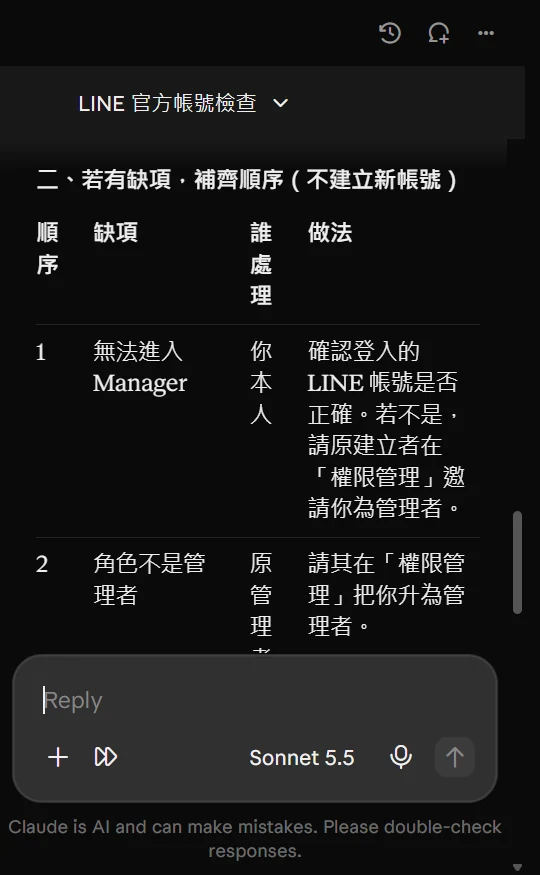
缺項由本人依順序補齊；Claude 提醒金鑰不要貼給它、不要截圖
本人依 Claude 列出的缺項，由本人補齊；任何金鑰都不貼進對話
應看到：官方帳號可管理、Messaging API 已啟用、Channel 可查看
任務十一｜卡關怎麼辦？
先對照症狀；卡住 3 分鐘請助教判斷，不要重複貼同一段 prompt。
| 看到這個狀況 | 這樣處理 |
|---|---|
| 看不到本組官方帳號 | 你不是管理員：請建立者把你加為管理員，或改由建立者本人操作。 |
| Messaging API 尚未啟用 | 在「設定 → Messaging API」按啟用，選擇 Provider 並同意條款，全程由本人操作。 |
| LINE Developers 找不到 Channel | Provider 不同。回 Official Account Manager 的 Messaging API 頁，看綁定的 Provider 名稱再找。 |
測試成功，要同時看兩端
金鑰由本人放入指令碼屬性；不要貼進prompt或投影畫面。
| 程式端 | 手機端 |
|---|---|
| 函式正確，設定已備妥 | 加的是本組正確官方帳號 |
| 本人執行一次測試 | 手機實際收到本次測試訊息 |
| 記錄發送結果 | 核對內容與接收對象 |
| 顯示錯誤或未收到 | 先排查，不反覆連續發送 |
測試 LINE 訊息實際送達
- 本人設定指令碼屬性
- 貼上測試 prompt
- 本人執行，核對手機實際收到
任務十二｜照這 8 步做（1／2）
灰字是做完應看到的畫面；對不上就先停，看「卡關怎麼辦」。完整 prompt 在講義。
- 在 Apps Script 分頁的側邊欄貼上任務十二 prompt，按 Enter從講義複製 prompt應看到：約 2 分鐘後，多了 sendTestMessage；Claude 說明金鑰只從指令碼屬性讀取，尚未執行
- 本人LINE Developers → 你的 Channel →「Messaging API」分頁 → 最下方 Channel access token：還沒發行就按「Issue」；已發行過會顯示「Reissue」（重新發行會讓舊的失效），沿用現有的就直接按右邊的複製圖示應看到：token 已複製；不要截圖、不要貼進對話或試算表
- 本人Apps Script 左側齒輪「專案設定」→ 最下方「指令碼屬性」→「新增指令碼屬性」（已有屬性時先按「編輯指令碼屬性」）：屬性填 LINE_TOKEN，值貼上剛才的 token應看到：出現一列 LINE_TOKEN
- 本人LINE Developers「Basic settings」分頁最下方複製「Your user ID」（U 開頭），再新增一列屬性 MY_USER_ID應看到：兩列屬性：LINE_TOKEN、MY_USER_ID
任務十二｜照這 8 步做（2／2）
灰字是做完應看到的畫面；對不上就先停，看「卡關怎麼辦」。完整 prompt 在講義。
- 本人按「儲存指令碼屬性」；確認左上專案名稱是本次的「年度計畫自動化」應看到：屬性已儲存在正確專案
- 本人用自己手機的 LINE 掃「Messaging API」分頁上的 QR code，把官方帳號加為好友應看到：LINE 聊天清單出現官方帳號
- 本人回編輯器，函式選單選 sendTestMessage →「執行」；第一次會要求連線外部服務的授權，流程同任務七應看到：執行記錄顯示已送出、HTTP 200
- 本人看手機應看到：收到「測試成功：年度計畫提醒系統已連線 」；手機收到才算通過
AI 工作時，延伸想一想
本人確認事項優先處理；AI 完成就回到成果，不為討論延後進度
應用討論
收到訊息與通知規則正確有何不同？
完成後核對
每組至少一位實際收到測試內容
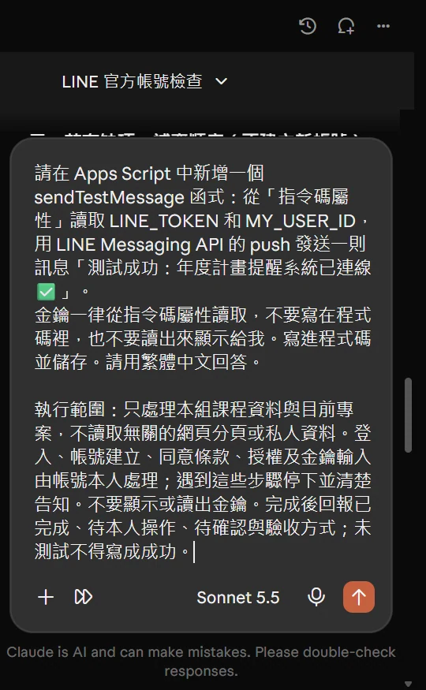
在 Apps Script 分頁的側邊欄貼上任務十二 prompt，按 Enter
在 Apps Script 分頁的側邊欄貼上任務十二 prompt，按 Enter從講義複製 prompt
應看到：約 2 分鐘後，多了 sendTestMessage；Claude 說明金鑰只從指令碼屬性讀取，尚未執行
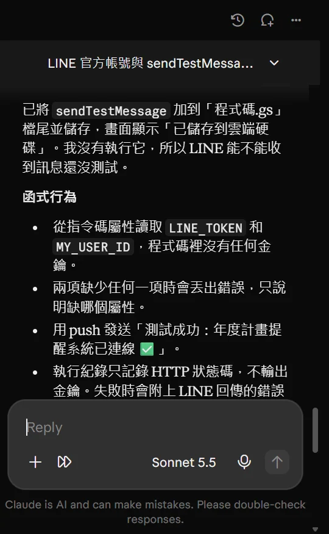
約 1 分鐘：多了 sendTestMessage；金鑰只從指令碼屬性讀取，Claude 沒有執行
在 Apps Script 分頁的側邊欄貼上任務十二 prompt，按 Enter從講義複製 prompt
應看到：約 2 分鐘後，多了 sendTestMessage；Claude 說明金鑰只從指令碼屬性讀取，尚未執行

「Messaging API」分頁最下方 Channel access token：本人按「Issue」（已發行過會顯示 Reissue，重新發行會讓舊的失效），再按複製圖示；不截圖、不貼進對話
本人LINE Developers → 你的 Channel →「Messaging API」分頁 → 最下方 Channel access token：還沒發行就按「Issue」；已發行過會顯示「Reissue」（重新發行會讓舊的失效），沿用現有的就直接按右邊的複製圖示
應看到：token 已複製；不要截圖、不要貼進對話或試算表
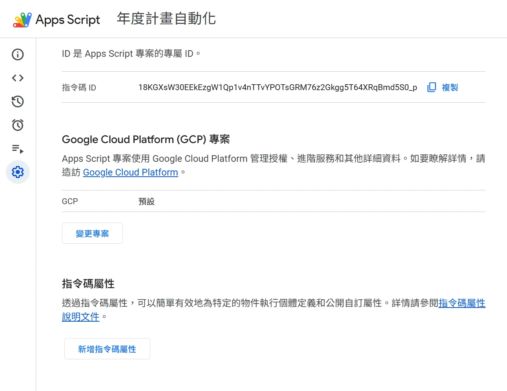
左側齒輪「專案設定」→ 最下方「指令碼屬性」→「新增指令碼屬性」（值由本人輸入）
本人Apps Script 左側齒輪「專案設定」→ 最下方「指令碼屬性」→「新增指令碼屬性」（已有屬性時先按「編輯指令碼屬性」）：屬性填 LINE_TOKEN，值貼上剛才的 token
應看到：出現一列 LINE_TOKEN
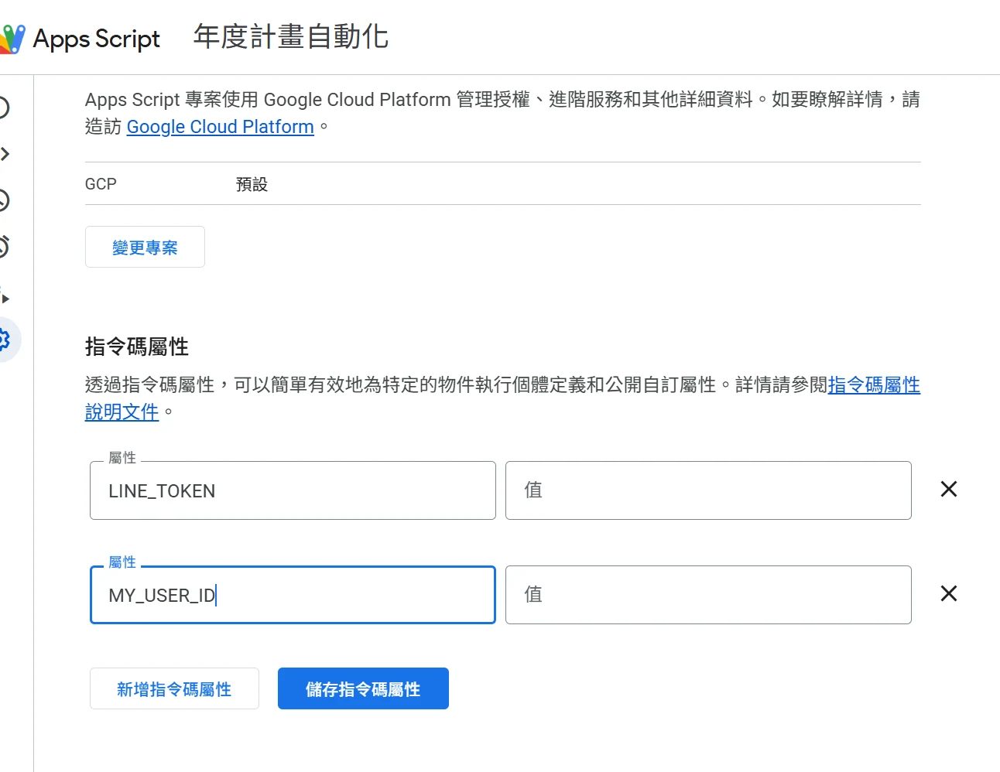
新增兩列屬性：LINE_TOKEN、MY_USER_ID；「值」由本人貼上，最後按「儲存指令碼屬性」
本人Apps Script 左側齒輪「專案設定」→ 最下方「指令碼屬性」→「新增指令碼屬性」（已有屬性時先按「編輯指令碼屬性」）：屬性填 LINE_TOKEN，值貼上剛才的 token
應看到：出現一列 LINE_TOKEN
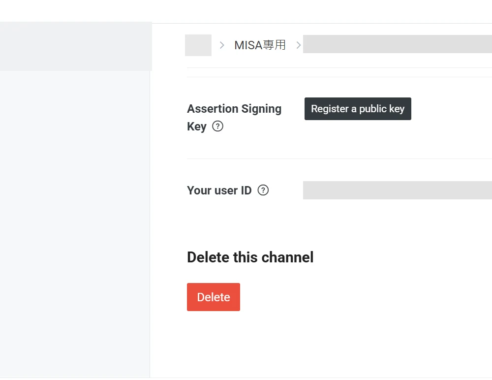
「Basic settings」分頁最下方「Your user ID」（U 開頭）：本人複製後新增屬性 MY_USER_ID（畫面已模糊）
本人LINE Developers「Basic settings」分頁最下方複製「Your user ID」（U 開頭），再新增一列屬性 MY_USER_ID
應看到：兩列屬性：LINE_TOKEN、MY_USER_ID
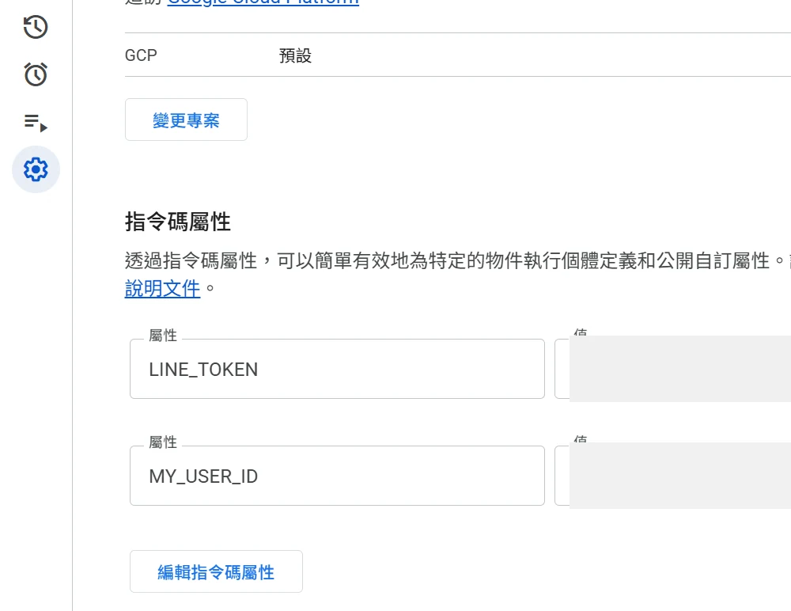
按「儲存指令碼屬性」：兩列 LINE_TOKEN、MY_USER_ID 已存在正確專案（值已模糊）
本人按「儲存指令碼屬性」；確認左上專案名稱是本次的「年度計畫自動化」
應看到：屬性已儲存在正確專案

看到「Google 尚未驗證這個應用程式」：先別慌，按「進階」
本人回編輯器，函式選單選 sendTestMessage →「執行」；第一次會要求連線外部服務的授權，流程同任務七
應看到：執行記錄顯示已送出、HTTP 200

確認是自己的專案，才按「前往 年度計畫自動化（不安全）」
本人回編輯器，函式選單選 sendTestMessage →「執行」；第一次會要求連線外部服務的授權，流程同任務七
應看到：執行記錄顯示已送出、HTTP 200
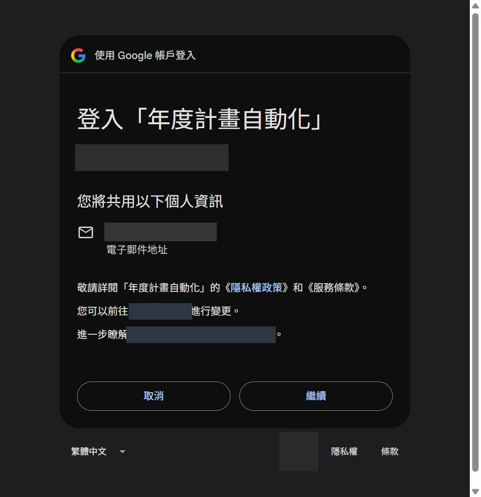
逐項看懂要求的權限（試算表、日曆），勾選後按「繼續」
本人回編輯器，函式選單選 sendTestMessage →「執行」；第一次會要求連線外部服務的授權，流程同任務七
應看到：執行記錄顯示已送出、HTTP 200
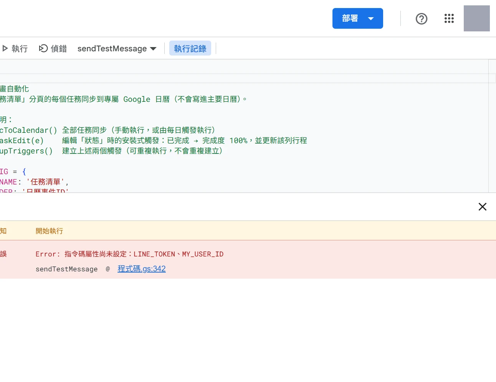
還沒設定金鑰就執行：記錄顯示「指令碼屬性尚未設定」，沒有送出任何訊息
本人回編輯器，函式選單選 sendTestMessage →「執行」；第一次會要求連線外部服務的授權，流程同任務七
應看到：執行記錄顯示已送出、HTTP 200
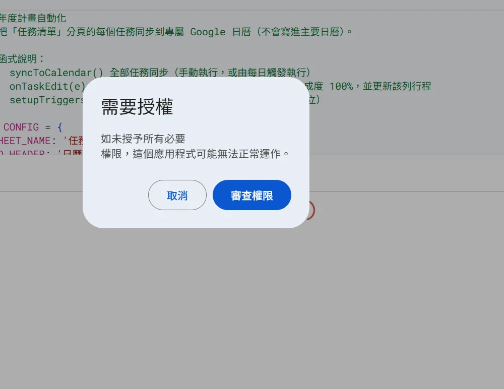
第一次執行跳出「需要授權」：按「審查權限」
本人回編輯器，函式選單選 sendTestMessage →「執行」；第一次會要求連線外部服務的授權，流程同任務七
應看到：執行記錄顯示已送出、HTTP 200
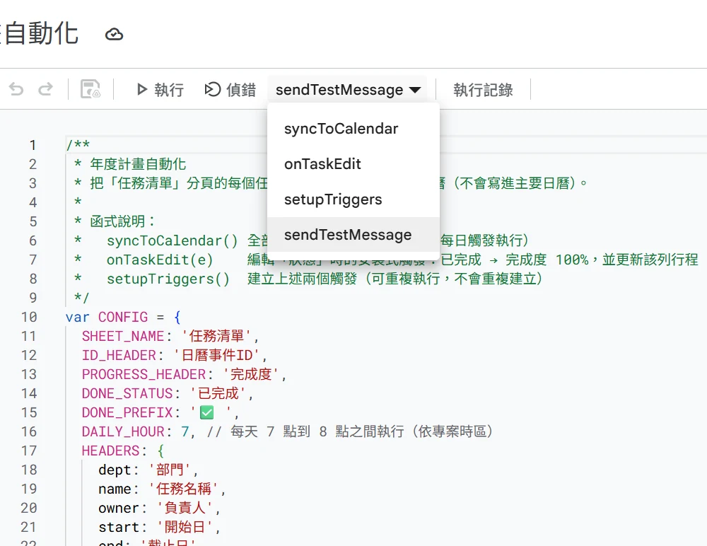
回編輯器，函式選單選 sendTestMessage →「執行」
本人回編輯器，函式選單選 sendTestMessage →「執行」；第一次會要求連線外部服務的授權，流程同任務七
應看到：執行記錄顯示已送出、HTTP 200
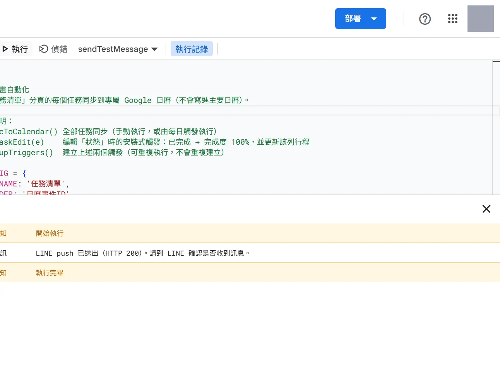
設好屬性後再執行：記錄顯示「LINE push 已送出（HTTP 200）」；手機收到才算通過
本人回編輯器，函式選單選 sendTestMessage →「執行」；第一次會要求連線外部服務的授權，流程同任務七
應看到：執行記錄顯示已送出、HTTP 200

手機收到「測試成功：年度計畫提醒系統已連線 」——手機收到才算通過
本人看手機
應看到：收到「測試成功：年度計畫提醒系統已連線 」；手機收到才算通過
任務十二｜卡關怎麼辦？（1／2）
先對照症狀；卡住 3 分鐘請助教判斷，不要重複貼同一段 prompt。
| 看到這個狀況 | 這樣處理 |
|---|---|
| 記錄說指令碼屬性尚未設定 | 通常是沒按「儲存指令碼屬性」，或存到別的專案。看專案名稱與網址後重設並儲存。 |
| HTTP 401 | token 錯誤或已失效：本人重新發行，再更新 LINE_TOKEN。 |
| HTTP 200 但手機沒收到 | 確認已加官方帳號好友且沒封鎖；MY_USER_ID 必須是登入 LINE Developers 的那個 LINE 帳號。 |
| HTTP 429 或發送上限 | 免費方案每月訊息數有限，請助教確認額度；費率以課前查核的官方資訊為準。 |
任務十二｜卡關怎麼辦？（2／2）
先對照症狀；卡住 3 分鐘請助教判斷，不要重複貼同一段 prompt。
| 看到這個狀況 | 這樣處理 |
|---|---|
| 不小心把 token 貼進對話 | 立刻由本人到 LINE Developers 重新發行 token，並更新指令碼屬性。 |
金鑰管理：token 就是官方帳號的鑰匙
拿到 token 的人，可以用你的官方帳號發任何訊息
包括詐騙訊息。外洩等於把公司大門鑰匙交出去。
放在「指令碼屬性」
不要寫在程式碼、不要貼在試算表、不要貼在對話、不要截圖分享。
懷疑外洩就重發
LINE Developers 按「Reissue」，舊的 token 立刻失效。
休息 10 分鐘
點一下數字開始倒數
綁定示範：表格中的人，如何對到 LINE？
這是受控課程範例；僅靠傳姓名不等於正式公司身分驗證。
| 步驟 | 需要對上的資訊 |
|---|---|
| 任務表寫「林經理」 | 使用一致的角色名稱 |
| 接收者親自傳綁定訊息 | 名稱與任務表一致 |
| 系統記下綁定 | 回頭確認是這位自願接收者 |
| 尚未綁定的角色 | 保留未綁定狀態，不假設能收到 |
讓接收者完成綁定
- 貼上綁定 prompt
- 本人設定 Webhook 部署與回應
- 一位接收者親自綁定並核對結果
任務十三｜照這 8 步做（1／2）
灰字是做完應看到的畫面；對不上就先停，看「卡關怎麼辦」。完整 prompt 在講義。
- 在側邊欄貼上任務十三 prompt，按 Enter從講義複製 prompt應看到：約 3～6 分鐘後，多了 doPost 與「通訊錄」處理；Claude 可能先停下來問「入口只限本人」與「Webhook 要所有人」的衝突，由本人決定後才繼續
- 本人按「部署」→「新增部署作業」→ 類型「網頁應用程式」；說明填「LINE Webhook」，執行身分「我」，「誰可以存取」選「所有人」→「部署」應看到：得到一個新的網頁應用程式網址，和操作入口網址不同
- 本人按「複製」這個新網址，再按「完成」應看到：網址已複製；不要貼進對話或公開處
- 本人LINE Official Account Manager →「設定」→「Messaging API」→ Webhook 網址貼上 →「儲存」應看到：Webhook 網址已儲存
任務十三｜照這 8 步做（2／2）
灰字是做完應看到的畫面；對不上就先停，看「卡關怎麼辦」。完整 prompt 在講義。
- 本人「設定」→「回應設定」：Webhook 開啟、自動回應訊息關閉應看到：兩個開關狀態正確（要先存好網址，Webhook 才打得開）
- 本人自願接收者用自己的手機加官方帳號好友，親自傳「綁定 陳經理」（換成試算表上的負責人名稱，「綁定」後空一格）應看到：立刻收到「 已綁定：陳經理」
- 打開試算表應看到：自動出現「通訊錄」分頁，記下負責人、LINE userId 與綁定時間
- 在側邊欄告訴 Claude 已綁定，請它核對通訊錄；它要執行函式前，先看選中的函式名稱應看到：Claude 回報綁定結果與未驗證項目
AI 工作時，延伸想一想
本人確認事項優先處理；AI 完成就回到成果，不為討論延後進度
應用討論
公司正式使用時如何確認綁定身分？
完成後核對
一位自願接收者綁定正確；其他人自由選擇
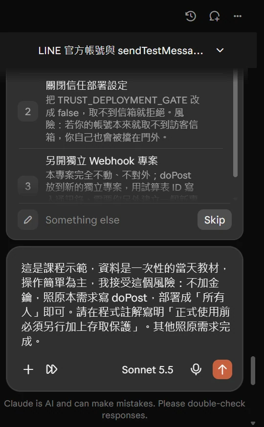
本人做決定：示範用、資料一次性，接受風險照原需求進行（正式使用要另加保護）
在側邊欄貼上任務十三 prompt，按 Enter從講義複製 prompt
應看到：約 3～6 分鐘後，多了 doPost 與「通訊錄」處理；Claude 可能先停下來問「入口只限本人」與「Webhook 要所有人」的衝突，由本人決定後才繼續
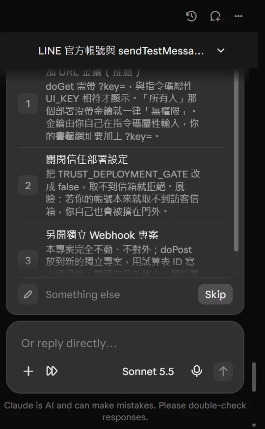
實測：Claude 發現「操作入口只限本人」和「Webhook 要所有人可存取」互相衝突，先停下來問
在側邊欄貼上任務十三 prompt，按 Enter從講義複製 prompt
應看到：約 3～6 分鐘後，多了 doPost 與「通訊錄」處理；Claude 可能先停下來問「入口只限本人」與「Webhook 要所有人」的衝突，由本人決定後才繼續
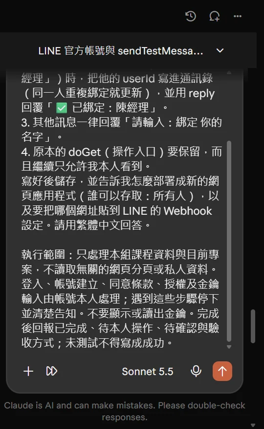
在側邊欄貼上任務十三 prompt，按 Enter
在側邊欄貼上任務十三 prompt，按 Enter從講義複製 prompt
應看到：約 3～6 分鐘後，多了 doPost 與「通訊錄」處理；Claude 可能先停下來問「入口只限本人」與「Webhook 要所有人」的衝突，由本人決定後才繼續
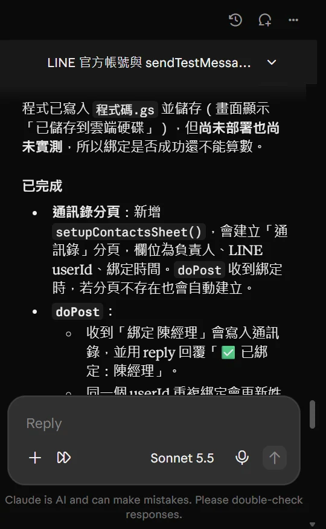
約 6 分鐘：多了 doPost 與通訊錄；Claude 說明尚未部署，並提醒無法驗證 LINE 簽章（已寫在註解）
在側邊欄貼上任務十三 prompt，按 Enter從講義複製 prompt
應看到：約 3～6 分鐘後，多了 doPost 與「通訊錄」處理；Claude 可能先停下來問「入口只限本人」與「Webhook 要所有人」的衝突，由本人決定後才繼續
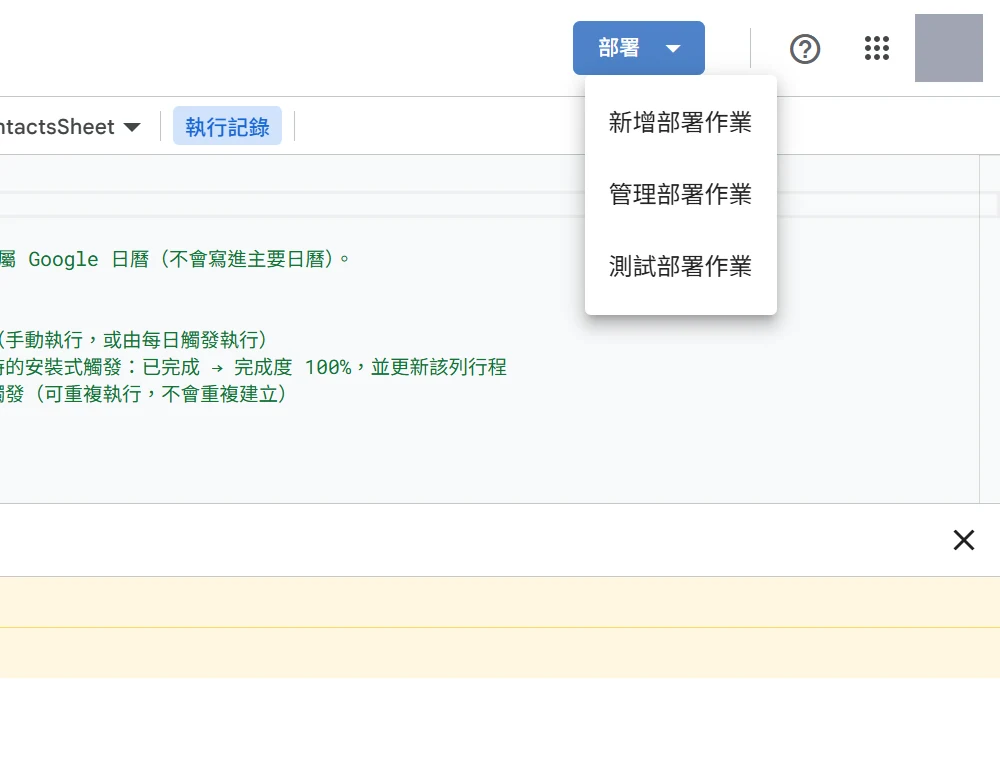
按右上「部署」→「新增部署作業」
本人按「部署」→「新增部署作業」→ 類型「網頁應用程式」；說明填「LINE Webhook」，執行身分「我」，「誰可以存取」選「所有人」→「部署」
應看到：得到一個新的網頁應用程式網址，和操作入口網址不同
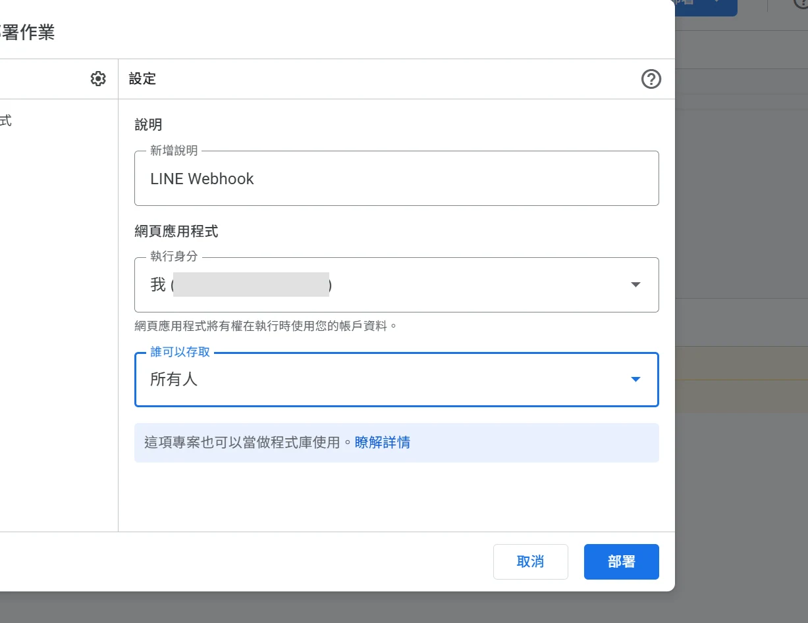
新增部署作業 → 網頁應用程式；說明「LINE Webhook」、執行身分「我」、「誰可以存取」選「所有人」→ 部署
本人按「部署」→「新增部署作業」→ 類型「網頁應用程式」；說明填「LINE Webhook」，執行身分「我」，「誰可以存取」選「所有人」→「部署」
應看到：得到一個新的網頁應用程式網址，和操作入口網址不同
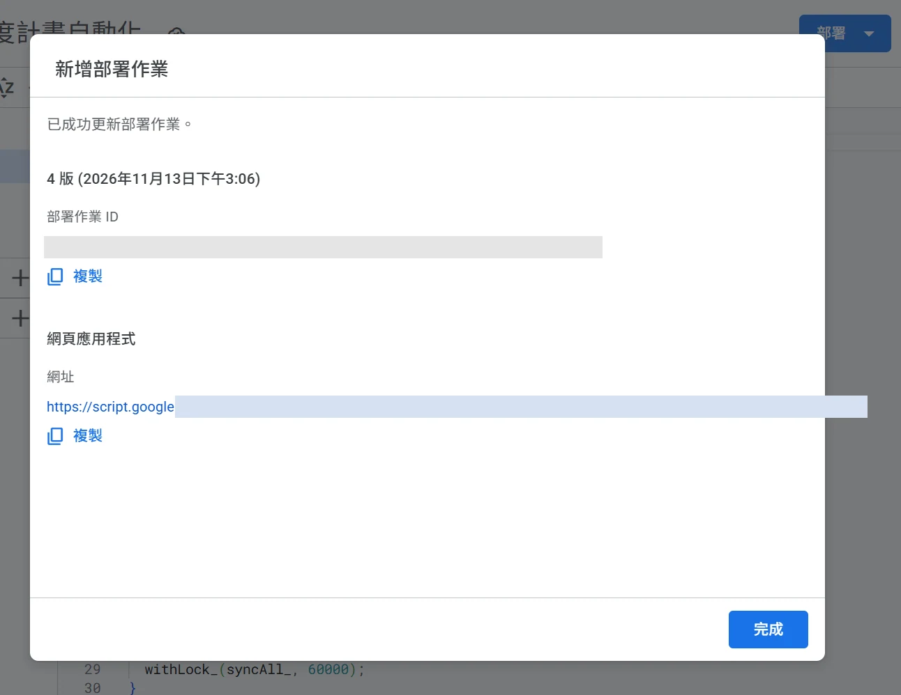
部署完成：這個新網址（和操作入口不同）就是 Webhook 網址，按「複製」再按「完成」
本人按「複製」這個新網址，再按「完成」
應看到：網址已複製；不要貼進對話或公開處
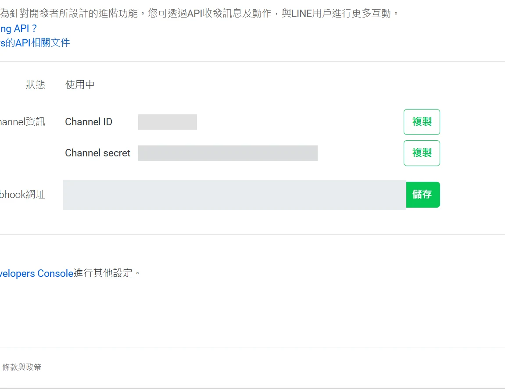
Official Account Manager →「設定」→「Messaging API」：Webhook 網址貼上新網址 →「儲存」（網址已模糊）
本人LINE Official Account Manager →「設定」→「Messaging API」→ Webhook 網址貼上 →「儲存」
應看到：Webhook 網址已儲存
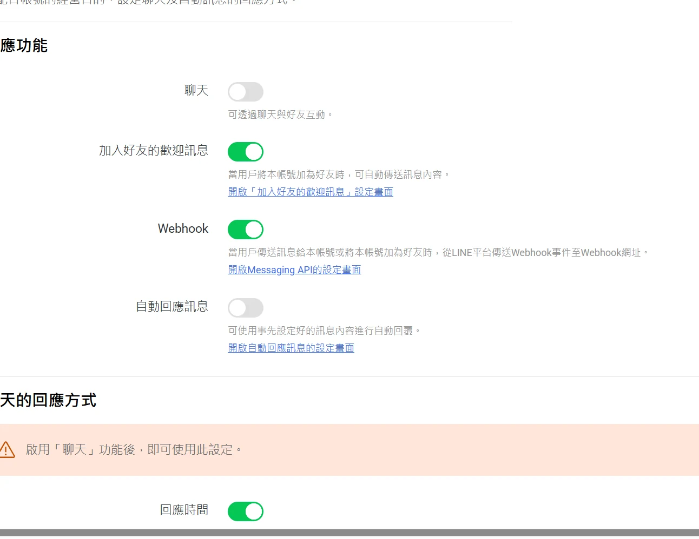
「設定」→「回應設定」：Webhook 開啟、自動回應訊息關閉（要先存好 Webhook 網址才打得開）
本人「設定」→「回應設定」：Webhook 開啟、自動回應訊息關閉
應看到：兩個開關狀態正確（要先存好網址，Webhook 才打得開）
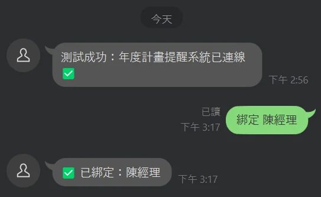
接收者親自傳「綁定 陳經理」，立刻收到「 已綁定：陳經理」
本人自願接收者用自己的手機加官方帳號好友，親自傳「綁定 陳經理」（換成試算表上的負責人名稱，「綁定」後空一格）
應看到：立刻收到「 已綁定：陳經理」
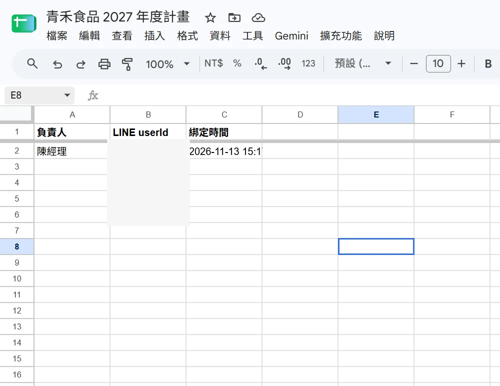
打開試算表：自動出現「通訊錄」分頁，記下負責人、LINE userId 與綁定時間（userId 已模糊）
打開試算表
應看到：自動出現「通訊錄」分頁，記下負責人、LINE userId 與綁定時間
任務十三｜卡關怎麼辦？（1／2）
先對照症狀；卡住 3 分鐘請助教判斷，不要重複貼同一段 prompt。
| 看到這個狀況 | 這樣處理 |
|---|---|
| 傳訊息後沒有任何回覆 | 依序檢查：Webhook 開關是否開啟、貼的是「所有人」那個新網址（不是操作入口）、部署權限是否為所有人。 |
| 回覆「請輸入：綁定 你的名字」 | 格式不符：「綁定」後要空一格，名字和試算表負責人完全相同。 |
| LINE Developers 的「Verify」顯示失敗 | Apps Script 網址會轉址，Verify 可能失敗；以手機實際傳訊與回覆為準。 |
| 修改 doPost 後沒有生效 | 對「LINE Webhook」那筆部署做「管理部署作業 → 建立新版本」，網址不變，不用改 LINE 設定。 |
任務十三｜卡關怎麼辦？（2／2）
先對照症狀；卡住 3 分鐘請助教判斷，不要重複貼同一段 prompt。
| 看到這個狀況 | 這樣處理 |
|---|---|
| Claude 執行了錯的函式 | 實測發生過：函式選單沒切換成功就按了執行。請它停下回報，本人查看執行記錄，必要時重跑 syncToCalendar 確認沒有重複。 |
| Claude 停下來問：Webhook 要「所有人」可存取，操作入口會不會也被別人打開 | 這是 Claude 發現的真實風險，由本人決定。課程示範、資料一次性：回覆接受風險照原需求進行，並請它在註解寫明正式使用要另加保護。正式使用：選加網址金鑰或另開 Webhook 專案。 |
同一支程式開了兩扇門
操作入口（doGet）：只有我自己
看得到全公司任務，一定要鎖起來。程式裡再檢查一次「是不是本人」，雙重保險。
LINE Webhook（doPost）：所有人
LINE 平台要能按門鈴，所以必須公開。它只收「綁定」指令，不回傳任何計畫內容。
Apps Script 的限制
它讀不到 LINE 的簽章標頭，無法驗證訊息真的來自 LINE。課堂示範沒問題；正式上線、牽涉機密時，請 IT 改用能驗證簽章的平台（如 Cloud Run）。
先猜結果，再讓系統發送
先讓非操作者說出判斷；AI 寫程式時推演「怎樣讓提醒失敗」，執行後把預測與規則一起對照實際結果。
依負責人發送每日提醒
- 貼上每日提醒 prompt
- 本人執行並核對五種情境
- 確認早上 8 點時段排程
任務十四｜照這 8 步做（1／2）
灰字是做完應看到的畫面；對不上就先停，看「卡關怎麼辦」。完整 prompt 在講義。
- 本人在「任務清單」最後加 5 筆測試任務（復刻範例包「提醒測試資料.csv」），以今天為基準調整日期：TEST01 未完成 3 天後到期、TEST02 已完成、TEST03 未完成 20 天後到期、TEST04 未完成 2 天後到期且負責人「未綁定乙」、TEST05 未完成且昨天到期；TEST01、TEST05 的負責人改成已綁定的名字應看到：任務清單多 5 筆 TEST 資料
- 在側邊欄貼上任務十四 prompt，按 Enter從講義複製 prompt應看到：約 5 分鐘後，多了 dailyReminder 與早上 8 點時段觸發；Claude 列出每個情境的預期收件人與內容，並說明沒有發送
- 執行 Claude 提供的唯讀預覽函式（11/13 實測名稱 previewReminder），核對預期名單應看到：記錄顯示【預覽，未發送】：TEST01、TEST05 提醒負責人；TEST04 通知本人未綁定；TEST02、TEST03 不出現
- 本人全組確認後，函式選單選 dailyReminder，確認名稱再按「執行」；只按一次應看到：執行記錄顯示成功則數與未綁定人數（實測：成功 1 則、未綁定 1 人、寫入最後提醒 2 列）
任務十四｜照這 8 步做（2／2）
灰字是做完應看到的畫面；對不上就先停，看「卡關怎麼辦」。完整 prompt 在講義。
- 本人看手機應看到：接收者收到含 TEST01、TEST05 的提醒；本人收到「未綁定乙」通知
- 回試算表看「最後提醒」欄應看到：只有 TEST01、TEST05 寫入發送時間
- 點左側鬧鐘圖示「觸發條件」應看到：有一筆 dailyReminder（時間驅動，早上 8 點時段）
- 本人課程結束前，本人決定是否保留觸發：不保留就執行 Claude 提供的 stopReminderTrigger（或在觸發條件頁該列按「⋮」→「刪除觸發條件」）；再刪除 5 筆 TEST 列與日曆上的 TEST 行程應看到：記錄顯示「已刪除 dailyReminder 觸發 1 個」；測試資料清除
怎樣讓提醒一定失敗？
8 分鐘紙上推演｜AI 寫程式時進行，不真的發送；本人確認事項優先處理
- 1分鐘：如果要讓同事很快封鎖這個官方帳號，而且主管仍不知道真正進度，可以怎麼做？
- 3分鐘：每人寫 1～2 個保證失敗的做法，例如每天把所有任務發給所有人、已完成還天天催、同名就當同一人、發完不檢查。
- 3分鐘：組內選 1 項，改寫成規則：「停止＿＿；只有＿＿時，通知＿＿，請他＿＿；由＿＿檢查結果。」
- 1分鐘：AI 完成並執行後，拿這條規則對照五種情境的結果；程式沒做到的標「後續需求」。
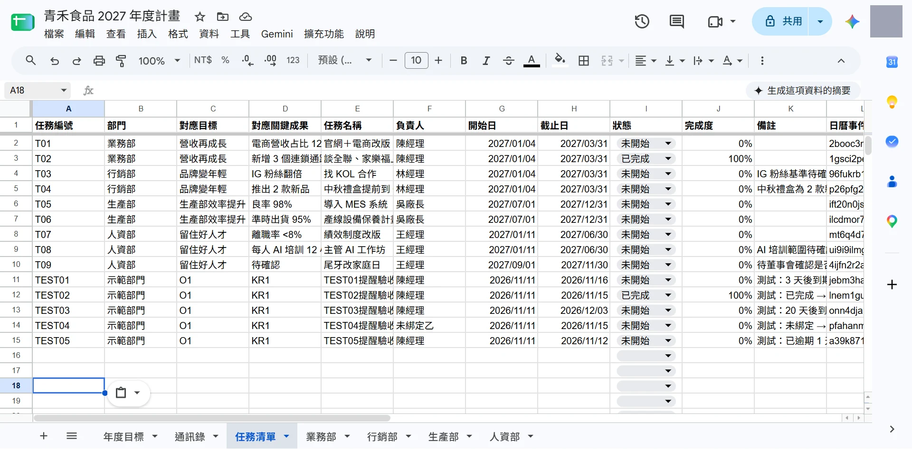
在「任務清單」最後加 5 筆測試任務（以今天為基準調整日期）：TEST01、TEST05 負責人用已綁定的名字
本人在「任務清單」最後加 5 筆測試任務（復刻範例包「提醒測試資料.csv」），以今天為基準調整日期：TEST01 未完成 3 天後到期、TEST02 已完成、TEST03 未完成 20 天後到期、TEST04 未完成 2 天後到期且負責人「未綁定乙」、TEST05 未完成且昨天到期；TEST01、TEST05 的負責人改成已綁定的名字
應看到：任務清單多 5 筆 TEST 資料
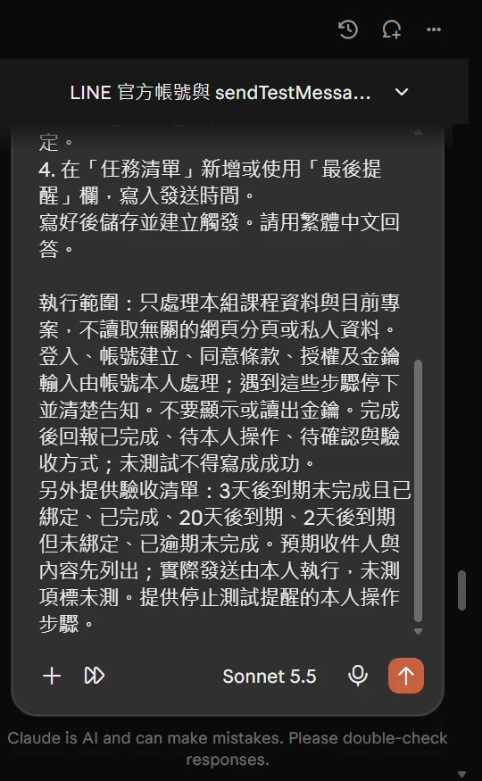
在側邊欄貼上任務十四 prompt，按 Enter
在側邊欄貼上任務十四 prompt，按 Enter從講義複製 prompt
應看到：約 5 分鐘後，多了 dailyReminder 與早上 8 點時段觸發；Claude 列出每個情境的預期收件人與內容，並說明沒有發送
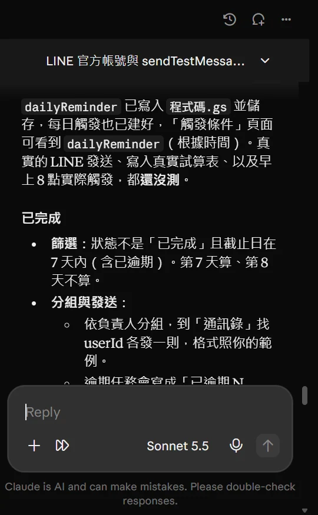
約 4 分鐘：多了 dailyReminder 與早上 8 點時段觸發；Claude 列出五種情境的預期收件人，並說明沒有發送
在側邊欄貼上任務十四 prompt，按 Enter從講義複製 prompt
應看到：約 5 分鐘後，多了 dailyReminder 與早上 8 點時段觸發；Claude 列出每個情境的預期收件人與內容，並說明沒有發送
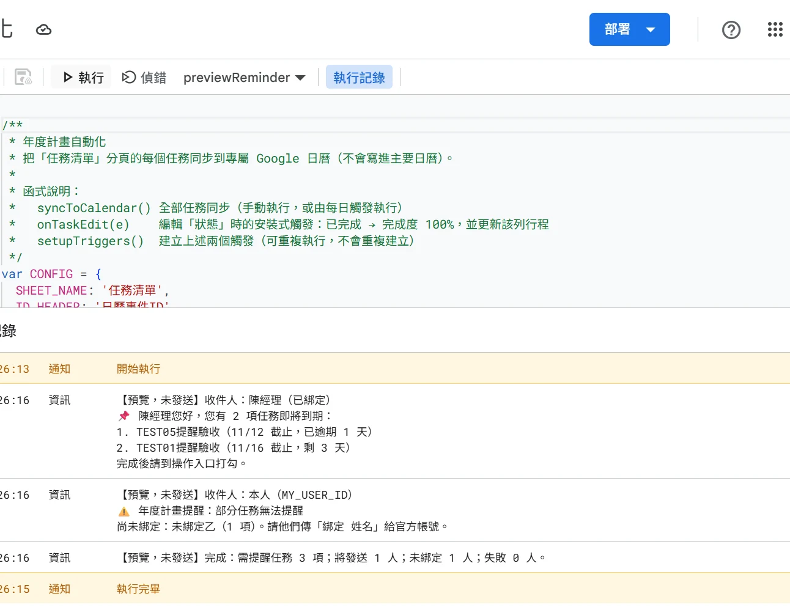
先執行唯讀的 previewReminder：TEST01、TEST05 提醒陳經理；TEST04 通知本人未綁定；TEST02、TEST03 不出現
執行 Claude 提供的唯讀預覽函式（11/13 實測名稱 previewReminder），核對預期名單
應看到：記錄顯示【預覽，未發送】：TEST01、TEST05 提醒負責人；TEST04 通知本人未綁定；TEST02、TEST03 不出現
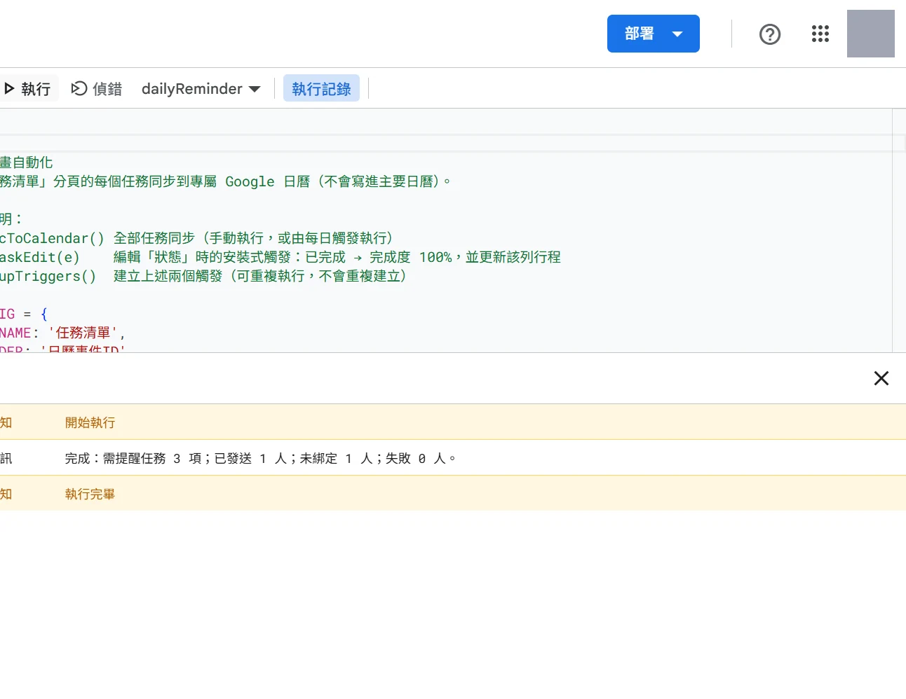
全組確認後執行 dailyReminder（只按一次）：已發送 1 人、未綁定 1 人、失敗 0 人
本人全組確認後，函式選單選 dailyReminder，確認名稱再按「執行」；只按一次
應看到：執行記錄顯示成功則數與未綁定人數（實測：成功 1 則、未綁定 1 人、寫入最後提醒 2 列）
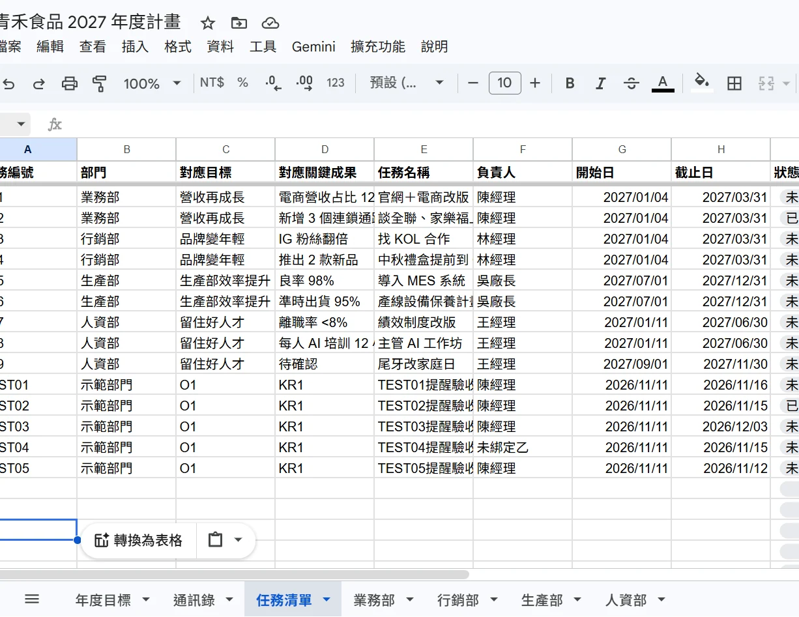
回試算表看「最後提醒」欄：只有 TEST01、TEST05 寫入發送時間
回試算表看「最後提醒」欄
應看到：只有 TEST01、TEST05 寫入發送時間
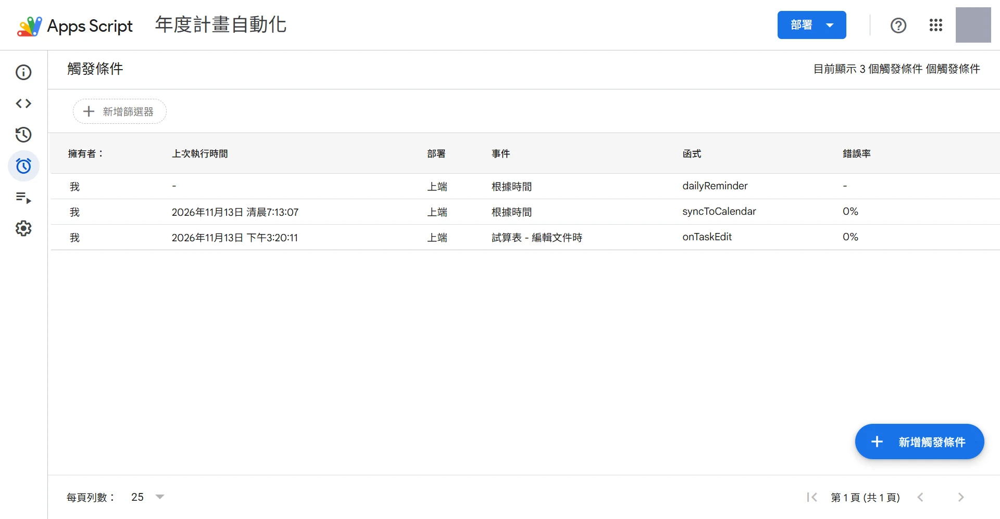
左側鬧鐘圖示「觸發條件」：多了一筆 dailyReminder（根據時間，早上 8 點時段）
點左側鬧鐘圖示「觸發條件」
應看到：有一筆 dailyReminder（時間驅動，早上 8 點時段）
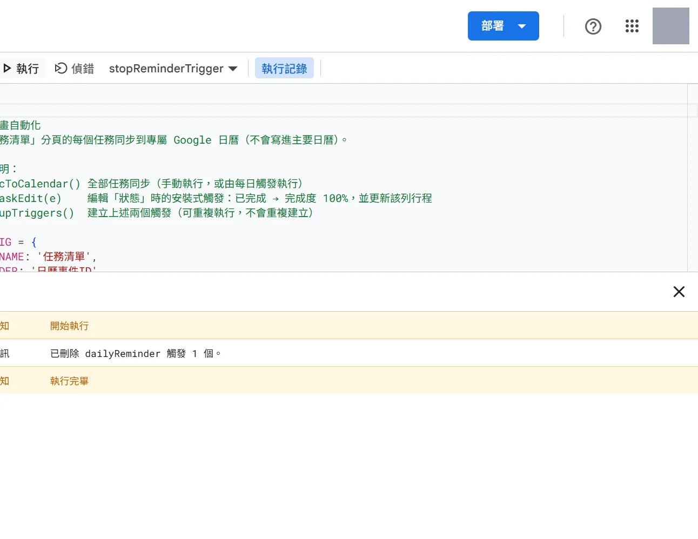
測完由本人決定是否保留觸發：執行 stopReminderTrigger 刪除每日提醒觸發
本人課程結束前，本人決定是否保留觸發：不保留就執行 Claude 提供的 stopReminderTrigger（或在觸發條件頁該列按「⋮」→「刪除觸發條件」）；再刪除 5 筆 TEST 列與日曆上的 TEST 行程
應看到：記錄顯示「已刪除 dailyReminder 觸發 1 個」；測試資料清除
任務十四｜卡關怎麼辦？（1／2）
先對照症狀；卡住 3 分鐘請助教判斷，不要重複貼同一段 prompt。
| 看到這個狀況 | 這樣處理 |
|---|---|
| 沒人收到提醒 | 先執行 sendTestMessage 確認連線；再核對「通訊錄」的名字與負責人完全相同。 |
| 已完成的任務也被提醒 | 狀態文字可能多了空白或寫法不同；把結果告訴 Claude，請它只修判斷條件。 |
| 收到好幾則重複提醒 | 每按一次執行就發一次。停止重按，看執行項目確認次數。 |
| 日曆多了 TEST 行程 | 加測試資料時編輯觸發會建立行程。刪除測試列後，日曆上的 TEST 行程要另外刪除。 |
任務十四｜卡關怎麼辦？（2／2）
先對照症狀；卡住 3 分鐘請助教判斷，不要重複貼同一段 prompt。
| 看到這個狀況 | 這樣處理 |
|---|---|
| 隔天早上沒有準 8 點收到 | 時間觸發只保證在該小時內執行；到 Apps Script「執行項目」查看是否執行與錯誤。 |
AI 也會點錯，所以一定要驗收
2026/10/18 任務十三實測摘要
- AI 代理會出錯，就像新進同仁會出錯
- 好的 AI 會誠實回報：它做了什麼、哪裡不確定
- 你的工作：看回報、看執行記錄、看結果
- 重要動作前，改用「每步確認」模式
延伸應用：這套提醒系統還能怎麼用
應收帳款提醒
逾期未收款，自動 LINE 業務與財務
設備保養提醒
保養日前 3 天通知廠務，完成後打勾
合約與證照到期
到期前 30 天通知法務與負責人
新人報到清單
報到前一週，自動分派 IT、人資、主管的準備事項
業務週目標
每週一推播本週目標與上週達成率
門市巡店
店長打勾回報，未完成的晚上 8 點自動提醒
資安總整理：AI 導入治理清單
| 面向 | 要做的事 | 這兩天在哪裡學到 |
|---|---|---|
| 資料 | 資料分級；給 AI 的資料先去敏 | 資安①②：上傳資料前先去敏 |
| 帳號 | 關閉模型訓練；公司用企業方案、統一管理 | 資安②：Claude 隱私設定 |
| 代理 | 高風險動作人工確認；用獨立瀏覽器設定檔 | 資安②：核准模式、提示詞注入 |
| 授權 | 看懂 OAuth 權限；不明來源一律不授權 | 資安③：Google 尚未驗證 |
| 擴充 | Skill、外掛只用可信來源 | 資安④：Skill 來源 |
| 金鑰 | 放在安全的屬性／金庫；外洩立刻重發 | 資安⑤：LINE token |
| 公開 | 對外開放的網址不回傳機密 | 資安⑥：Webhook |
兩天帶走的三件事
看見AI的可能
讀資料、建表、寫程式、串接工具，完成一條可觀察的流程。
知道如何驗收
用實際資料與結果核對，分清通過、待查與未測。
交給同事復刻
帶走資料、prompt與操作指引，不必自己記住所有按鈕。
20分鐘回看：從一份資料到一則提醒
沿用已完成的測試紀錄，避免為了回看而重複發送訊息。
- 5分鐘：從原始資料找到同一筆表格資料。
- 5分鐘：核對日曆與手機顯示。
- 5分鐘：回看這筆任務的綁定與實收紀錄。
- 5分鐘：指出哪一步仍待查，說明回去應從哪項任務接續。
提醒驗收｜用上課日作基準
每組至少一位實收；未測標未測，其他人自願加入
謝謝大家
MISA 高階主管 AI 實戰營
課程講義與範本：請掃描講義 QR Code